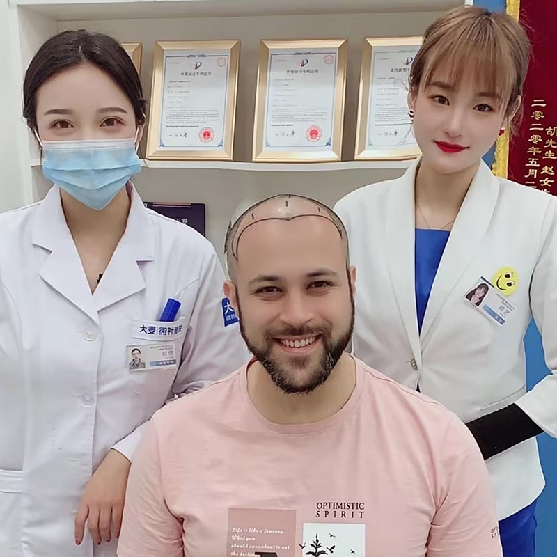

A hairline transplant surgically restores your frontal hairline by relocating healthy follicles from the permanent donor zone to the front of your scalp. At Barley, our surgeons use proprietary microneedle FUE technology with 0.6mm micro-punches to extract and implant each follicle at precise 10–15° angles—replicating your natural hair growth pattern. The result is a soft, irregular front edge that is virtually indistinguishable from a natural hairline.
If you experience any of the following, you may be an ideal candidate for hairline restoration
Men experiencing temple recession or frontal hairline retreat who want to restore a more youthful hairline position
Young adults whose hairline has shifted too far back and want a permanent, natural-looking solution
Individuals born with a naturally high forehead who want to lower their hairline for better facial balance and proportions
Patients whose front hair has gradually thinned and want to restore density where it matters most for a youthful appearance
Anyone whose hair loss has plateaued or is being managed with medication, ensuring long-term natural results
Candidates need enough healthy follicles in the back of the scalp to support the transplant and achieve desired density
Not sure if you're a candidate? Book a free consultation and our surgeons will evaluate your scalp, discuss your goals, and provide personalized recommendations.
Get Free ConsultationFill in the temples and front corners. A shorter procedure with quick recovery.
Rebuild a noticeably receding hairline. This is our most commonly performed range.
Address significant frontal loss and rebuild a complete hairline frame.
Depending on how many centimeters the hairline needs to be lowered for balanced facial proportions.
A gentle, curved hairline that follows the natural shape of your forehead. Perfect for a youthful, approachable look that softens facial features.
A clean, horizontal line that gives a strong, defined appearance. A popular choice for men who prefer a structured, masculine look.
A refined design that subtly preserves the temple peaks for a distinguished, mature look that ages gracefully and naturally.
An organic, asymmetrical design that mirrors nature's randomness. The most undetectable option for patients who want absolute authenticity.
Your journey begins with a thorough consultation. Our surgeon examines your scalp, discusses your goals, and draws a preliminary hairline directly on your forehead. We refine the design together until you are completely happy with it. Your forehead height, eyebrow position, and facial symmetry all play a role in shaping the final result.
Using our patented microneedle FUE system, individual grafts are carefully harvested from the permanent donor zone at the back of your head. The 0.6mm micro-punch leaves only tiny dots that heal invisibly within days — so you can keep your hair short without anyone noticing.
The extracted follicles are immediately placed in a specialized preservation solution and sorted under a microscope. Single-hair grafts are set aside for the front hairline, while multi-hair grafts are reserved for the area behind it where more density is needed.
Our surgeon makes micro-incisions along the planned hairline using ultra-fine needles. Each incision is angled at 10–15 degrees to match the natural, flat-lying growth pattern of frontal hair. This step is critical — it is what makes the final result look natural rather than "pluggy."
Each prepared graft is gently inserted into its designated site. The very front row receives single-hair grafts for a soft, irregular edge, while density builds gradually behind it. Every hair is placed to grow in the correct direction for a seamless, natural look.
After the procedure, you receive detailed aftercare instructions. New hair starts growing around months 3–4, with noticeable density by month 6. Your full, mature result appears between 12–18 months — a permanent, natural-looking hairline that lasts a lifetime.
Compared to US, UK, or Europe
Smaller than industry standard
End-to-end bilingual team
Hairline transplants in China cost 50–70% less than in the US, UK, or Europe — without compromising quality. Most international patients save thousands of dollars while receiving world-class care.
Our 0.6mm micro-punches are smaller than the industry standard, which means smaller extraction sites, faster healing, less scarring, and a more natural-looking donor area.
From your first WhatsApp message to your final follow-up, our bilingual team ensures smooth communication in English at every step. We also help with travel planning, accommodation, and airport pickup.
Custom-crafted hairline reconstruction with advanced FUE microneedle technology

Your hairline is the first thing people notice about you. Our specialized hairline transplant procedure rebuilds a natural-looking frontal hairline that restores a youthful appearance and brings back your confidence. Every graft is placed with surgical precision and artistic vision to recreate the organic irregularity of natural hair growth.
Custom-shaped to complement your face
Each graft placed by hand
0.6mm microneedle extraction
Over 95% graft viability
Tailored to your unique facial structure and personal goals
From first consultation to your new look
Custom hairline drawn based on your facial features and personal goals
Quality check of your donor area and available graft count
Gentle FUE harvesting using 0.6mm microneedle technology
Single and multi-hair grafts separated for optimal placement
Meticulous implantation with natural angle and direction
Comprehensive recovery support and 18-month follow-up program
What makes our hairline transplants the top choice for international patients
Our surgeons know that a hairline is more than just a line of hair — it frames your entire face. Every hairline is designed around your facial proportions, age, and ethnic features so the result looks like it has always been there.
Real hairlines are never a solid wall of hair. We build density gradually — starting with sparse, single-hair grafts at the very front and increasing density behind it. This graduated approach is what makes the result completely undetectable.
We design your hairline not just for how it looks today, but for how it will look in 10 or 20 years. By placing it at an age-appropriate position and preserving donor grafts for the future, we ensure your results stay natural for life.
Trusted by patients worldwide for over 18 years
Pioneering microneedle hair transplant technology since 2006
Consistent high standards across all direct-operated locations
Proprietary microneedle and implant pen technology for superior results
Trusted by patients from across the globe
Full English support for international patients throughout their entire journey
State-of-the-art facilities with strict safety protocols for your peace of mind
See the transformations our patients have achieved


Capturing the moments with our satisfied patients

Very happy with result

Couldn't be happier

Feeling amazing

Professional job

Pleased with outcome

Great choice made

Perfect transformation

Feeling wonderful
Hear from patients who chose Barley for their hairline restoration
I'm a woman with a naturally high forehead that always made my face look too long. I got 1,800 grafts to lower my hairline about 2cm, and the difference is incredible. My face finally feels balanced and proportional. The surgeon even created a subtle widow's peak that softens my features perfectly. Nobody at work noticed I had surgery — they just said I looked refreshed.
My M-shaped temples made me look 10 years older than I am. I chose the no-shave option for my hairline because I didn't want anyone to know. The doctor placed 1,700 grafts without shaving the front, so I went back to the office on day 4 and nobody noticed. The new baby hairs along my temples grew in so naturally, even my mom couldn't find the transplant line.
The design consultation blew me away. The surgeon showed me three different hairline options on my photos: rounded, M-shaped mature, and a widow's peak style. I went with a custom rounded design with a tiny peak, and he spent 50 minutes drawing it on my scalp before we began. 2,100 grafts later, looking at my before-and-after photos is night and day. My face shape looks completely different and so much better.
I wanted a prominent widow's peak like I had in college, and I was worried a transplant wouldn't give me that sharp V-shape. But the team at Barley delivered perfectly. They used single hairs along the peak to create that natural feathered edge, not a hard line. Now at month 12, my hairline has those irregular little wisps and baby hairs just like my old one used to. I've started wearing my hair pushed back again and I don't feel self-conscious at all.
As a guy with a square jaw, I was concerned about making my head look even more blocky with the wrong hairline. The surgeon designed a gently curved front with some natural break-up and irregularity along the edge. The 1,900 grafts were placed at angles that perfectly match how my hair grows forward. I now have bangs that fall naturally and frame my face instead of making it look wider. The difference in my appearance from before is stunning.
The temple points were always my biggest insecurity — they receded so far back I couldn't wear short hairstyles anymore. 1,600 grafts concentrated on rebuilding those M-shaped corners, and I'm honestly emotional about the results. What I love most is how the very front isn't perfectly uniform; there are random shorter hairs and slight density variations just like real hairlines have. I'm back to wearing fades again, and my barber hasn't said a word about it being a transplant.
Modern facilities designed for your comfort and safety

Our modern clinic

Relax in our comfortable waiting area

Sterile and fully equipped

One-on-one discussions

Rest in comfort after your procedure

Warm and welcoming entrance
Everything you need to know before your procedure
Click to copy contact information
15810155700
+86 13730143529
hairtransplant@qq.com

Everyone's hair loss journey and solution are unique due to a variety of factors. Our hair restoration experts will assist you in determining the root cause and the best solution for your hair restoration plan. If you have any questions, please ask; we are happy to assist.